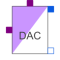

DA_ConverterSimple digital to analog converter |

|
Information
This information is part of the Modelica Standard Library maintained by the Modelica Association.
Simple digital to analog converter with a variable input signal width of N bits. The input signal is an N-vector of type Logic (9-valued logic according to IEEE 1164 STD_ULOGIC). The output voltage of value y is generated by an ideal voltage source. The output can only change if the trigger signal trig of type Logic changes to '1' (forced or weak). In this case, the output voltage is calculated in the following way:
N
y = SUM ( x[i]*2^(i-1) )*Vref/(2^N-1),
i=1
where x[i], i=1,...,N is 1 or 0. and Vref is the reference value. Therefore, the first bit in the input vector x[1] is the least significant one (LSB) and x[N] is the most significant bit (MSB).
This is an abstract model of a DAC. Hence, it can not cover the dynamic behaviour of the converter. Therefore the output will change instantaneously when the trigger signal rises.
Parameters (2)
| N |
Value: Type: Integer Description: Resolution - input signal width |
|---|---|
| Vref |
Value: Type: Voltage (V) Description: Reference voltage |
Connectors (4)
| trig |
Type: DigitalInput Description: Trigger input |
|
|---|---|---|
| x |
Type: DigitalInput[N] Description: Digital input |
|
| p |
Type: PositivePin Description: Positive electrical pin (output) |
|
| n |
Type: NegativePin Description: Negative electrical pin (output) |
Used in Examples (1)
|
Modelica.Electrical.Analog.Examples
Conversion circuit |